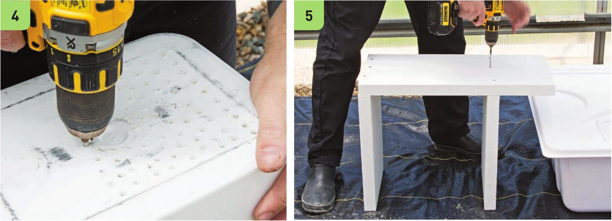

Frame Assembly and Bucket Preparation Bucket selection is very important. The ideal bucket is square and there should be at least a 2-inch gap between the buckets when stacked into each other. The buckets in this garden were obtained for free from the bakery section of a grocery store. Many bakeries receive their raw ingredients in large square buckets. There are many ways to make frame assembly easier. Most stores that sell lumber offer to cut the lumber to specific dimensions if requested. Request the dimensions listed in the steps below to skip the work of cutting the lumber and to reduce the number of tools required. The frame should slope toward the reservoir. Some growers prefer to use cinder blocks as supports for the buckets, or a mix of cinder blocks and wood. Top drip buckets can get heavy, so make sure the frame is capable of supporting a lot of weight. 1 Wearing work gloves and eye protection, cut the 2 x 12" x 8‘ board into the following lengths: 2 x 12" x 16" 2 x 12" x 1 6Va“ 2 x 12" x 2' 2 Remove any labels from the buckets. 3 Paint the lumber before assembly. The outer buckets can be painted too, if desired. The inner bucket in the double Dutch bucket does not need to be painted. 4 Measure and mark drainage holes in the inner bucket and drill the holes using the 3/i6n drill bit. The top bucket should be quick draining. 5 Build the frame using the 1 6" and 1 6V4" boards as legs. The shorter support leg is closest to the reservoir to create a slope toward the reservoir and is positioned IV 2" from the edge of the 2 x 1 2" x 2' board to create an overhang. Use the level and square to assemble the frame with the 2Vi screws. 86 DIY HYDROPONIC GARDENS
